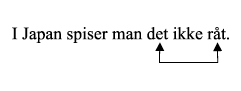

ここでは，第５課で使われた表現に関連のある文法事項について説明します．
第３課そして第４課では，形容詞を付加的に使う場合の性（共性・中性），数（単数・複数）そして未知／既知による変化について学びました．
| 未知形 | 既知形 | ||
単数 | 複数 | 単数 | 複数 | |
共性 (en) | en ung pige | unge piger | den unge pige | de unge piger |
中性 (et) | et stort hus | store huse | det store hus | de store huse |
このように形容詞が名詞よりも前に現れて，名詞を修飾する場合には，名詞の性，数そして未知／既知によって形容詞が語形変化します．
しかし，形容詞は名詞よりも後に現れることもあります．例えば，A = B（AはBです．）のような言い方をする際，Aの位置に主語となる名詞や代名詞，そしてBの位置に形容詞がくる場合には，その形容詞は補語と呼ばれます．（主語に対する補語の場合は，「主格補語」と呼ばれます．）この場合，Bの位置にある形容詞は，Aの位置にある名詞や代名詞によって語形変化をします．
会話表現で取り扱った表現をもとに，形容詞が補語の位置にある場合の語形変化について見ていきましょう．

この場合は，gulerodenが共性名詞の単数形なので，形容詞råもそれに合わせて語尾が何も付かない共性の形態にします．

この場合は，人称代名詞detが中性形なので，形容詞rigtigもそれに合わせてrigtigtという中性形にします．
それでは，主語が複数の場合にはどのように変化するでしょうか？
主語が複数の場合には，形容詞storに複数形の語尾 -e を付けます．
上記の例から分かるように，形容詞がA = B のBの位置にくる場合は，形容詞は必ず未知形の語形変化をします．
つまり，Aの位置にくる名詞が既知形であっても，Bの位置にくる形容詞はその名詞に合わせた未知形変化をするということです．
×Huset er store.
○Huset er stort.
― 主語が人称代名詞の場合を使って復習しましょう ―
| 単数 | 複数 | |
1人称 | Jeg er høj. | Vi er høje. | |
2人称 | 親称 | Du er høj. | I er høje. |
敬称 | De er høj. | De er høje. | |
3人称 | Han er høj. | De er høje. | |
Hun er høj. | |||
Den er høj. | |||
Det er højt. | |||
さらにA = Bという関係は，上で見たような
Guleroden er rå.
Det er rigtigt.
De er store.
のように，
A er B.
という文にだけ現れるものではありません．
スキット内の次の例文を見てみましょう．
Spiser man kinakål rå? 白菜を生で食べますか？
I Japan spiser man det ikke råt. 日本では，それを生では食べません．
上記の例文の，＜白菜を生で食べる＞，＜それを生で食べる＞ という日本語訳からも分かるように，ここにA = B という関係が存在しています．つまり，白菜＝生，それ＝生という関係です．ただし，上記の例文の場合，A = B という関係のAが文中では，主語ではなく，動詞の目的語（食べるの目的語）となっています．（このような場合のBを「目的格補語」と呼びます．）
このような場合にも，Bの位置にくる形容詞をAの位置にある目的語に合わせて語形変化をさせます．
この場合は，kinakålが共性名詞の単数形なので，それに合わせて形容詞råは語尾が何も付かない未知形・単数・共性の形態をしています．

また，この場合には，spiserの目的語detが中性形なので，形容詞råもそれに合わせてråtという中性形にします．